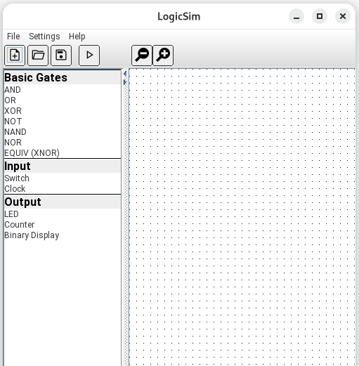
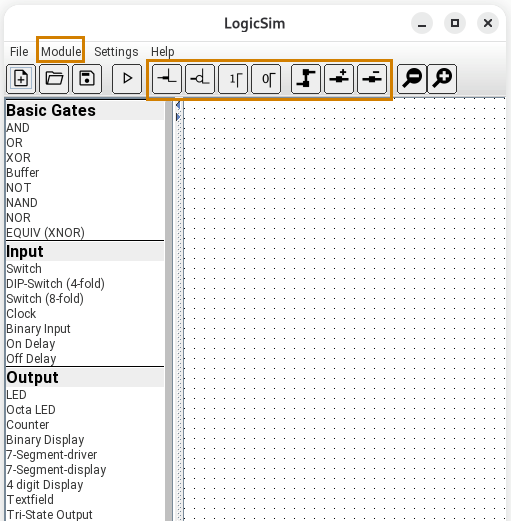
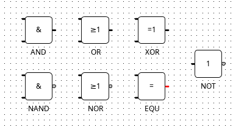
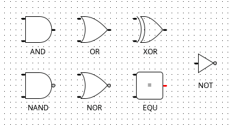
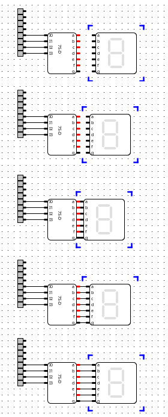
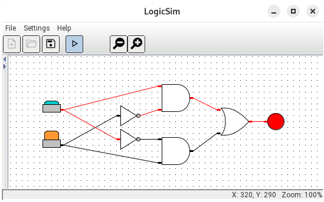

LogicSim ist ein Werkzeug um digitale Schaltkreise zu zeichnen und simulieren.
Einfache Beispiele verwenden Schalter, Taster, Logikgatter (wie z.B. AND, OR, XOR, NOT) und LEDs. Für komplexere Schaltkreise, Module können kreiert und wiederverwendet werden um die Komplexität aufzubauen.

Vereinfacht

Erweitert
Ganz oben am Fenster befinden sich die Menüleiste und Werkzeugleiste. Auf der linken Seite ist eine Liste von Komponenten, welche im aktuellen Schaltkreis verwendet werden können. Rechts ist die Hauptfläche wo der Schaltkreis gezeichnet werden kann.
Die zwei Bilder hier zeigen das Hauptfenster zuerst mit minimaler Komplexität und dann mit höherer Komplexität (mittels Einstellungen-Menü). Mit niedriger Komplexität wird die Anzahl Komponente reduzuert, die "Module"-Menü wird versteckt, und auch einige von den Knöpfen aus der Werkzeugeleiste. So können Benutzer mit einer vereinfachter Umgebung anfangen und erst später die anderen Elemente einfügen.
Die Sprache von LogicSim kann geändert werden indem man eine Sprache aus der Einstellungen-Menü auswählt und dann LogicSim wieder neustartet.
Aus der Liste auf der linken Seite können Komponenten auf der Arbeitsfläche verschoben werden, oder auch per Doppelklick eingefügt werden.
Die Komponente wird verkabelt, indem auf den Ausgang (meist rechte Seite) eines Gatters geklickt wird und das Kabel auch über Zwischenklicks bis zum Eingang (meist linke Seite) eines anderen Gatters geführt wird.
Gatter und Kabel können durch Anklicken ausgewählt werden. Verschieben (per Drag) und Löschen (Entf./Del-Taste) ist möglich.
Bei einigen Gattern (z.B. Clock, MonoFlop, LCD, TextLabel) können Einstellungen verändert werden, indem im Kontext-Menü (rechte Maustaste) des Gatters "Eigenschaften" ausgewählt wird.
Für manche Gatter (AND, OR, XOR, usw.) kann die Anzahl der Eingänge eingestellt werden, um Gatterkaskaden zu vermeiden. Per Default ist die Anzahl Eingänge bei solchen Gattern 2, aber mit Rechtsklick und "Eingang hinzufügen" bzw. "Eingang entfernen" kann zwischen 2 und 5 Eingänge ausgewähtl werden.
Logikgatter wie AND und OR können mit zwei unterschiedlichen Stilen dargestellt werden, auswählbar in der "Einstellungen"-Menü. Diese zwei Optionen werden hier gezeigt.

IEC-Stil

ANSI-Stil
Pins können manuell miteinander verbunden werden mit Klick auf dem einen Pin und dann Klick auf dem zweiten.
Falls die Einstellung "Autom. Verkabelung" aktiviert ist in den Einstellungen, kann man sie stattdessen automatisch verbinden, welches sich besonders eignet wenn die Komponenten mehrere Verbindungen brauchen.
Mit dieser Funktion bringt man die eine Komponente einfach neben der zweiten, sodass die Pins einander berühren. Die Pins werden automatisch verkabelt, auch wenn man die Komponente wieder wegzieht, wie hier abgebildet.
|
 Automatische Verkabelung mit 7 Pinpaaren |
Dieser Treiber auf der linken Seite hat 7 Ausgangspins, und das Display rechts hat 7 entsprechende Eingabepins. Das Display wird neben den Treiber gebracht, automatisch verkabelt, und dann wieder weggezogen. So muss man die 7 Drähte nicht einzeln zeichnen. Falls aus Versehen falsch verkabelt wurde kann man alles wieder trennen indem man auf dem Display rechts-klickt und dann "Gatter entkoppeln" aus der Menü auswählt. |
Um den fertigen Schaltkreis zu testen kann man ins Simulationsmodus schalten mid dem "Simulieren" Knopf auf der Werkzeugleiste (sieht aus wie ein "Abspielen"-Knopf).
In diesem Modus kann man die Schalter aktivieren (dem Schaltertyp entsprechend) und die Ergebnisse mit LEDs anschauen. Aktivierte Pins und Dräte werden rot dargestellt.

Simulation
Dieses Beispiel zeigt wie man einen XOR-Gatter aus anderen Gattern bauen kann. Ein Schalter ist aktiviert (gedräckt), deswegen leuchtet die LED rot.
Schaltkreise können mit dem "Speichern"-Knopf auf der Werkzeugleiste oder von der "Datei"-Menü gespeichert werden. Normale Schaltkreise werden als xml gespeichert mit der Dateiendung ".lsc" (für LogicSim Circuit). Module haben eine ähnliche Format, werden aber mit der DateiEndung ".lsm" (für LogicSim Module) gespeichert.
Um einen vorher gespeicherten Schaltkreis zu laden, wählt man "Öffnen" aus der Werkzeugleiste oder Datei -> Öffnen von der Menü, und dann wählt man die Datei aus.
Um eine wiederverwendbare Module zu kreieren wählt man "Module erstellen" aus der "Module"-Menü. Diese Menü ist aber nur bei eingestellten höheren Komplexitäten sichtbar.
Bei der Erstellung erhält man eine leere Oberfläche mit einem 16-Eingäge "Inputs"-Block und einem 16-Ausgänge "Outputs"-Block. Alles was dazwischen gezeichnet wird wird die Module die dann als ".lsm"-Datei gespeichert werden kann.
Schalter können mit den Eingängen verbunden werden und LEDs zu den Ausgängen um die Module zu testen bevor sie gespeichert wird.
Um diese Module in einem neuen Schaltkreis zu verwenden wählt man "Modul laden" aus der "Module"-Menü, und selektiert die gespeicherte Moduldatei. Die Module wird mit dem gegebenen "Beschriftung" in der Komponentenliste auf der linken Seite erscheinen.
Jetzt kann diese Komponente auf der Oberfläche gezogen werden genau wie andere Komponente. Dann kann diese Modul (oder mehrere Instanzen dieser Modul) mit anderen Komponenten verbunden und getestet werden.